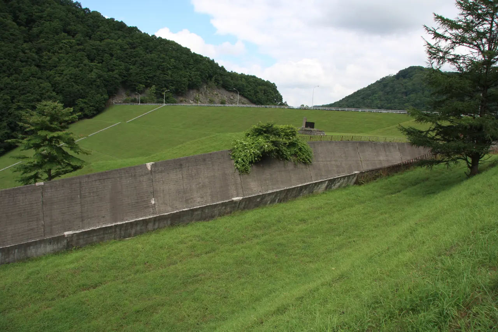
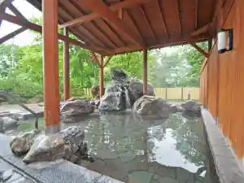
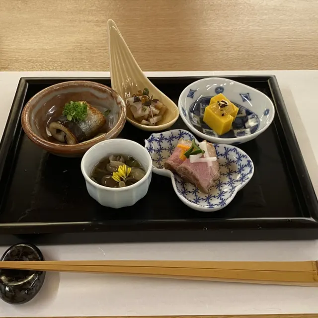
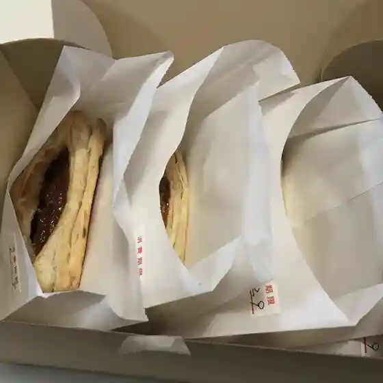
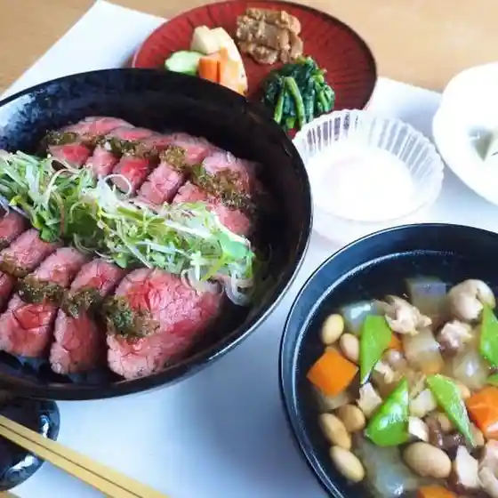
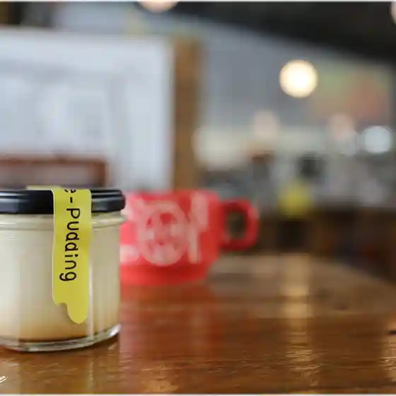
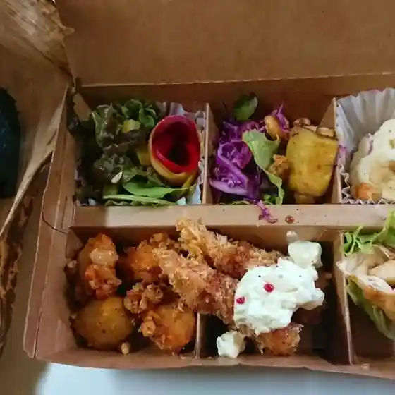
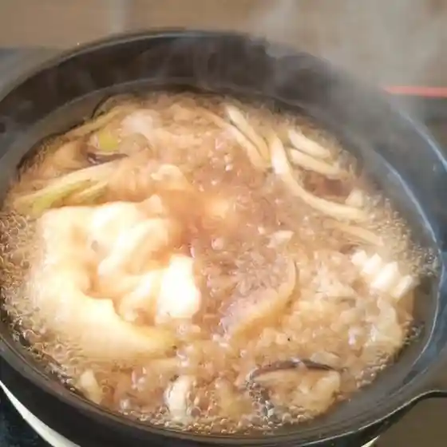
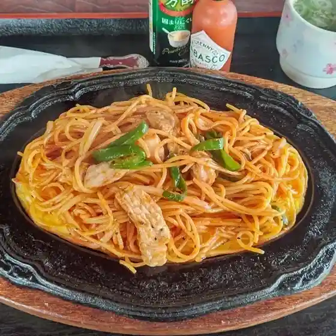
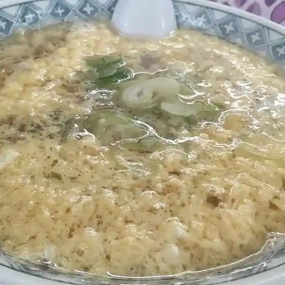

Atsuma
Atsuma · Hokkaido
Atsuma
Highlighted on the Hokkaido map.

Stay
こぶしの湯あつま

Kobushino Yu Atsuma
森のオーベルジュ三（みつ）
Mori No Ooberuju San ( Mitsu )
Dining
森のオーベルジュ三

Mori No Ooberuju San
森のパイ工房

Mori No Pai Koubou
日本料理 oma

Nihonryouri Oma
FORT by THE COAST

Fort By The Coast
シジマカフェ

Shijimakafe
ドライブイン本郷

Doraibuin Hongou
お食事処 かくれん坊

O Shokuji Tokoro Kakuren Bou
潮騒

Shiosai
パン工房 Chillin'
Pan Koubou Chillin'
江戸そば マルノ
Edo Soba Maruno
CAFE Trianon
Cafe Trianon
厚真園
Atsuma Sono
Boulangerie PELLANT
Boulangerie Pellant
かねなか 中島食堂
Kanenaka Nakajima Shokudou
A・COOP 厚真店
A Coop Atsuma Mise
新日本海フェリー すいせん
Shinnihon Umi Ferii Suisen
おやじ
Oyaji
新日本海フェリー あかしあ ヴァンベール
Shinnihon Umi Ferii Akashia Vanbeeru
食空間 ゆるり
Shoku Kuukan Yururi
燻製工房 Thmey
Kunsei Koubou Thmey
飲み喰い処江戸っ子
Nomikui Tokoro Edokko
あづま成吉思汗本舗 市原精肉店
Azuma Jingisukan Honpo Ichihara Seinikuten
こぶしの湯 あつま
Kobushino Yu Atsuma
寒露
Kanro